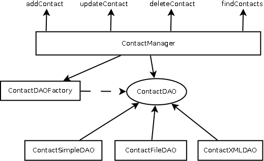

Введение в список контактов
Чтобы мы могли дальше двигаться не просто рассматривая новое, а со смыслом и практикой, предлагаю начать разработку очень простого приложения, которое позволит нам задействовать описываемые технологии.
Чтобы не придумывать что-то очень сложное, я буду делать простой список контактов, который будет иметь возможность делать основные операции (назовём их для дальнейших рассуждений «бизнес-действие»):
- Просмотр списка контактов
- Добавление контакта
- Редактирование контакта
- Удаление контакта
Также предлагаю делать свой вариант - например список машин в автосалоне, список заказов пиццы, список книг. Пусть он будет выглядеть практически так же, как мой, но это будет ваш собственный проект.
В этой статье мы создадим каркас нашего приложения - основные классы и методы. При изучении нового материала будем расширять эту функциональность.
Для начала проетирования воспользуемся нашим набором функций и существительным «контакт». Эти слова на самом деле очень помогают при начальной разработке - вы по сути определяете предметную область и можете выделить какие-то базовые классы и их методы.
Естественно, что при наработке дальнейшего опыта и усложнении систем, которые вы будете разрабатывать, набор классов и их функциональность будет увеличиваться, но основные принципы останутся такие же, как и в нашем случае - смотрим описание и выделяем существительные и глаголы. В них основная идея и будет скрываться.
Достаточно легко можно увидеть класс Contact, который будет использоваться как хранилище информации об одном контакте. Также нам потребуется класс, который предоставит нам нужные функции для работы со списком контактов - удаление, добавление, редактирование, получение списка. Назовём его ContactManager. Также нам потребуется класс (классы) для хранения контактов в каком-то постоянном хранилище. Т.к. систем хранения у нас будет несколько - для файлов, для базы данных.
В нашем случае это не очень выразительно видно, но я очень хочу, чтобы вы уловили разницу между хранением данных в хранилище и действиями по редактированию. Этот момент важен по следующим соображениям:
- Функции редактирования могут быть гораздо сложнее обычного сохранения данных в хранилище.
Например, добавление контакта может потребовать проверку данных на правильность полей, проверку на наличие такого контакта (причём такая проверка может быть весьма нетривиальной задачей - по имени или по e-mail или ещё как). Также надо принимать во внимание возможность дальнейшего расширения системы. Добавление контакта может потребовать выполнить какие-то дополнительные действия - поиск сведений о контакте в социальных сетях, поиск через Гугл или синхронизацию данных с удалённым хранилищем. В итоге мы однозначно можем сказать, что бизнес-действие нередко включает несколько элементарных действий, среди которых будет и действия с хранилищем. - Хранилища могут быть совершенно разными. Это может быть файл - причём в разных форматах: CSV, XML, какой-то текст, бинарное представление (MS Word, MS Excel). Это может быть база данных - причём совершенно разных типов - например SQL и NoSQL. Это может быть та же 1C-Бухгалтерия или сервер MS Exchange. Или IBM Lotus Notes. В общем систем хранения может быть много и надо быть готовым к тому, чтобы перевести ваше приложение на новый вариант с текущего.
Суммируя всё вышеизложенное мы будем строить взаимодействие класса ContactManager с хранилищами через интерфейс, реализовать который должны все хранилища, которые мы будем создавать.
Давайте нарисуем упрощённую диаграмму наших классов:
Как видите, наш класс ContactManager взаимодействует с хранилищем не напрямую, а через интерфейс ContactDAO. Т.к. все хранилища его реализуют, то нам будет легко менять их фактически «на лету».
Класс Contact
Этот класс не должен вызывать каких-то больших вопросов. Там перечислены нужные поля и для них сделаны сетеры и гетеры. Может вызывать сомнение набор конструкторов - я сделал для всех полей (в случае редактирования) и все поля кроме ИД (contactId) - для случая добавления. Мне показалось, что так будет удобно. Переопределение метода toString() сделано для удобства вывода информации о контакте.
Файл Contact.java
Полный путь к файлу src/edu/javacourse/contact/entity/Contact.java
package edu.javacourse.contact.entity;
/**
* Класс для хранения данных контакта
*/
public class Contact {
// Идентификатор контакта
private Long contactId;
// Имя
private String firstName;
// Фамилия
private String lastName;
// Телефон
private String phone;
// email
private String email;
public Contact() {
}
public Contact(String firstName, String lastName, String phone, String email) {
this.firstName = firstName;
this.lastName = lastName;
this.phone = phone;
this.email = email;
}
public Contact(Long contactId, String firstName, String lastName, String phone, String email) {
this.contactId = contactId;
this.firstName = firstName;
this.lastName = lastName;
this.phone = phone;
this.email = email;
}
public Long getContactId() {
return contactId;
}
public void setContactId(Long contactId) {
this.contactId = contactId;
}
public String getFirstName() {
return firstName;
}
public void setFirstName(String firstName) {
this.firstName = firstName;
}
public String getLastName() {
return lastName;
}
public void setLastName(String lastName) {
this.lastName = lastName;
}
public String getPhone() {
return phone;
}
public void setPhone(String phone) {
this.phone = phone;
}
public String getEmail() {
return email;
}
public void setEmail(String email) {
this.email = email;
}
@Override
public String toString() {
return "Contact{" + "contactId=" + contactId + ", firstName=" + firstName + ", lastName=" + lastName + ", phone=" + phone + ", email=" + email + '}';
}
}
Класс ContactManager
Здесь тоже особых сложностей нет - в данном случае я просто перечислил те функции, которые мы хотели реализовать. Выглядит это конечно несколько натянуто, т.к. кроме вызовов методов для работы с хранилищем в них ничего нет, но мы уже обсуждали возможность расширения. Единственное, на что надо обратить внимание - мы используем интерфейс ContactDAO, а не реальный класс. Почему мы так сделали - я тоже объяснял выше.
Файл ContactManager.java
Полный путь к файлу src/edu/javacourse/contact/business/ContactManager.java
package edu.javacourse.contact.business;
import edu.javacourse.contact.dao.ContactDAO;
import edu.javacourse.contact.dao.ContactDAOFactory;
import edu.javacourse.contact.entity.Contact;
import java.util.List;
/**
* Класс для реализации функций над списком контактов
*/
public class ContactManager {
private ContactDAO dao;
public ContactManager() {
dao = ContactDAOFactory.getContactDAO();
}
// Добавление контакта - возвращает ID добавленного контакта
public Long addContact(Contact contact) {
return dao.addContact(contact);
}
// Редактирование контакта
public void updateContact(Contact contact) {
dao.updateContact(contact);
}
// Удаление контакта по его ID
public void deleteContact(Long contactId) {
dao.deleteContact(contactId);
}
// Получение одного контакта по его ID
public Contact getContact(Long contactId) {
return dao.getContact(contactId);
}
// Получение списка контактов
public List findContacts() {
return dao.findContacts();
}
}
Почему мы создаём экземпляр ContactDAO с использованием класса ContactDAOFactory я объясню чуть позже.
Интерфейс ContactDAO
Прибавочка DAO - это Data Access Object - объект доступа к данным. Для работы с хранилищем любого типа мы создали интерфейс, который определяет контракт, по которому любое хранилище для работы с контактами должно реализовать определённый набор функций. Это позволит нам в дальнейшем заменять реализации хранилища без особых хлопот.
Файл ContactDAO.java
Полный путь к файлу src/edu/javacourse/contact/dao/ContactDAO.java
package edu.javacourse.contact.dao;
import edu.javacourse.contact.entity.Contact;
import java.util.List;
/**
* Интерфейс для определения функций хранилища данных о контактах
*/
public interface ContactDAO {
// Добавление контакта - возвращает ID добавленного контакта
public Long addContact(Contact contact);
// Редактирование контакта
public void updateContact(Contact contact);
// Удаление контакта по его ID
public void deleteContact(Long contactId);
// Получение контакта по его ID
public Contact getContact(Long contactId);
// Получение списка контактов
public List findContacts();
} Класс ContactDAOFactory
Идея появления этого класса лежит в плоскости шаблонов проектирования. В данном случае это шаблон AbstractFactory. Попробую ответить на вопрос - а зачем он нужен?
Если простыми словами - классы для хранилища могут использоваться во многих местах. Это у нас всё достаточно просто - мы к нему обращаемся только в одном месте - в классе ContactManager. Но представим ситуацию, когда хранилище контактов потребуется не в одном классе, а например в 25-ти. Тогда, если мы захотим поменять наше хранилище на другое, то создание хранилища надо будет переопределять в 25-ти местах. Можно запутаться. Класс ContactDAOFactory легко решает эту задачу. Создание хранилища происходит исключительно в нём и больше нигде. Это удобно.
Файл ContactDAOFactory.java
Полный путь к файлу src/edu/javacourse/contact/dao/ContactDAOFactory.java
package edu.javacourse.contact.dao;
/**
* Фабрика для создания экземпляра ContactDAO
*/
public class ContactDAOFactory {
public static ContactDAO getContactDAO() {
return new ContactSimpleDAO();
}
}Классы ContactSimpleDAO и ContactTest
Классы имеют исключительно утилитарное назначение - мы можем их использовать для проверки системы. ContactSimpleDAO реализует интерфейс ContactDAO и это даёт нам возможность «смоделировать» хранилище. Что же касается класса ContactTest - он используется для вызова методов класса ContactManager и вывода результатов. Мы можем убедиться, что наша система (пусть пока и очень сырая) работает.
Файл ContactSimpleDAO.java
Полный путь к файлу src/edu/javacourse/contact/dao/ContactSimpleDAO.java
package edu.javacourse.contact.dao;
import edu.javacourse.contact.entity.Contact;
import java.util.ArrayList;
import java.util.Iterator;
import java.util.List;
public class ContactSimpleDAO implements ContactDAO {
private final List contacts = new ArrayList();
@Override
public Long addContact(Contact contact) {
Long id = generateContactId();
contact.setContactId(id);
contacts.add(contact);
return id;
}
@Override
public void updateContact(Contact contact) {
Contact oldContact = getContact(contact.getContactId());
if(oldContact != null) {
oldContact.setFirstName(contact.getFirstName());
oldContact.setLastName(contact.getLastName());
oldContact.setPhone(contact.getPhone());
oldContact.setEmail(contact.getEmail());
}
}
@Override
public void deleteContact(Long contactId) {
for(Iterator it = contacts.iterator(); it.hasNext();) {
Contact cnt = it.next();
if(cnt.getContactId().equals(contactId)) {
it.remove();
}
}
}
@Override
public Contact getContact(Long contactId) {
for(Contact contact : contacts) {
if(contact.getContactId().equals(contactId)) {
return contact;
}
}
return null;
}
@Override
public List findContacts() {
return contacts;
}
private Long generateContactId() {
Long contactId = Math.round(Math.random() * 1000 + System.currentTimeMillis());
while(getContact(contactId) != null) {
contactId = Math.round(Math.random() * 1000 + System.currentTimeMillis());
}
return contactId;
}
} Файл ContactTest.java
Полный путь к файлу src/edu/javacourse/contact/test/ContactTest.java
package edu.javacourse.contact.test;
import edu.javacourse.contact.business.ContactManager;
import edu.javacourse.contact.entity.Contact;
import java.util.List;
/**
* Класс для запуска тестовых вызовов
*/
public class ContactTest {
public static void main(String[] args) {
ContactManager cm = new ContactManager();
Contact c1 = new Contact("Андрей", "Соколов", "+7-911-890-7766", "sokolov@yandex.ru");
Contact c2 = new Contact("Сергей", "Иванов", "+7-911-890-7755", "ivanov@google.com");
Contact c3 = new Contact("Татьяна", "Семёнова", "+7-911-890-1164", "semenova@mail.ru");
System.out.println("ADD CONTACT ==============");
Long cId1 = cm.addContact(c1);
Long cId2 = cm.addContact(c2);
Long cId3 = cm.addContact(c3);
List result1 = cm.findContacts();
for(Contact c : result1) {
System.out.println(c);
}
System.out.println("UPDATE CONTACT ==============");
Contact change = new Contact(cId1, "Алексей", "Соколов", "+7-911-890-7766", "sokolov@yandex.ru");
cm.updateContact(change);
List result2 = cm.findContacts();
for(Contact c : result2) {
System.out.println(c);
}
System.out.println("DELETE CONTACT ==============");
cm.deleteContact(cId1);
List result3 = cm.findContacts();
for(Contact c : result3) {
System.out.println(c);
}
System.out.println("GET CONTACT ==============");
Contact contact = cm.getContact(cId2);
System.out.println(contact);
}
} Запуск программы
Компилируем и запускаем программу из командной строки Windows.
Компилируем с помощью команды:
javac -encoding utf-8 -sourcepath ./src -d bin src/edu/javacourse/contact/test/ContactTest.javaгде:
- -encoding - ключ, указывающий кодировку файла с исходными кодами классов (utf-8);
- -sourcepath - ключ, указывающий каталог с исходными кодами классов, которые используются (./src);
- -d - ключ, указывающий каталог, где будут сохраняться бинарные файлы (.class) (в каталоге bin);
- src/edu/... - путь к файлу с исходными кодами класса, в котором находится метод main.
Запускаем программу с помощью команды:
java -classpath ./bin edu.javacourse.contact.test.ContactTest